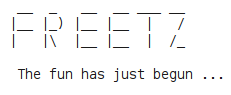

Suche:
Anmelden
Einstellungen
Hilfe/Anleitung
Über Trac
My Notifications
Registrieren
Impressum
Wiki
Journal
Projektplan
Quellen durchsehen
Tickets anzeigen
Suche
Tags
Downloads
Bildschirmfotos
Kontext-Navigation
Zurück zu packages/igmpproxy
Änderungshistorie für
packages/igmpproxy
Version
Datum
Autor
Kommentar
4
8 Jahren
oliver
Fix link
3
8 Jahren
leibezem
2
8 Jahren
leibezem
1
8 Jahren
oliver